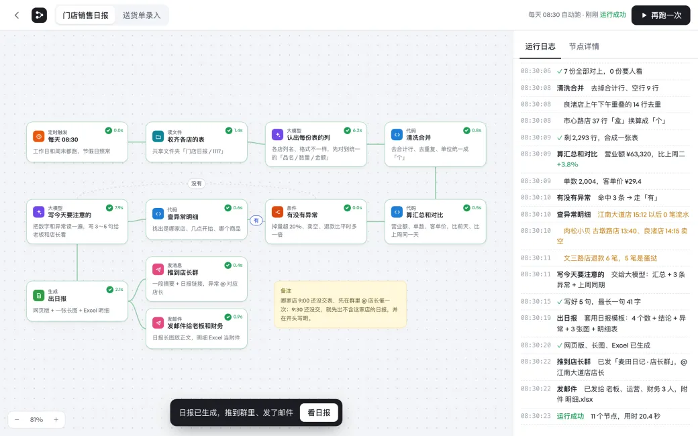
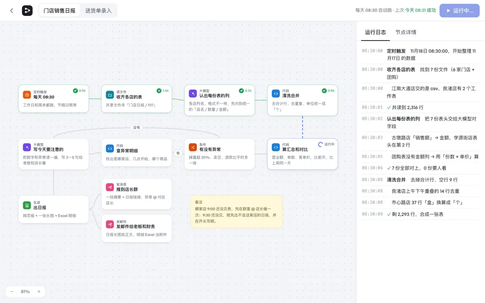
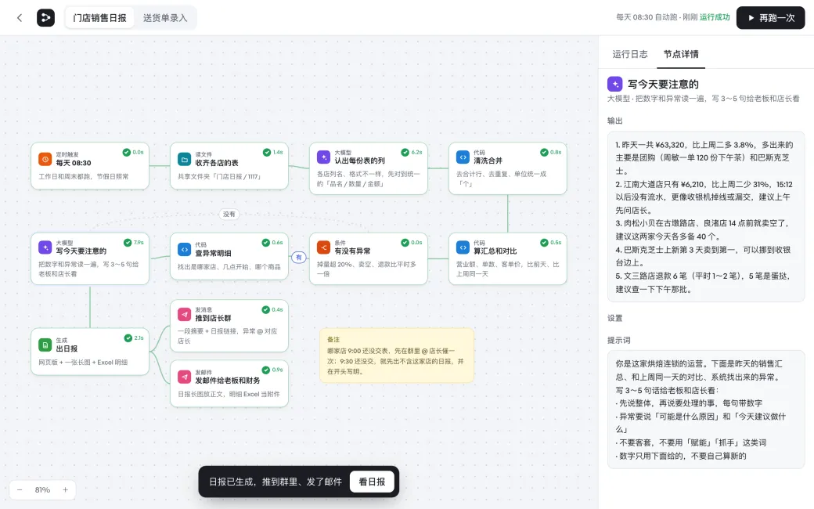
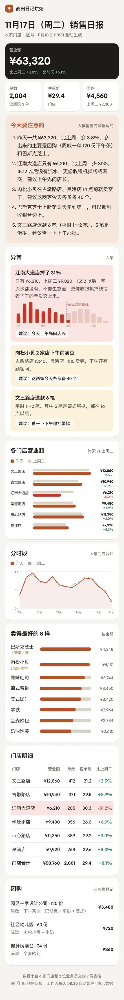
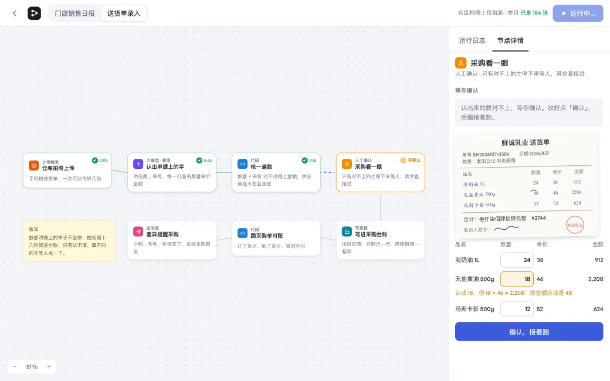

各门店交上来的 Excel 格式五花八门，它每天早上自己收齐、合并、算对比、找出哪里不对，再写几句话，做成日报推到群里。
适合 连锁门店、多个业务员交表、每天 / 每周要出报表的公司
几个关键画面
左右滑 · 5 张




什么场景
一家有 6 家门店的烘焙连锁（店名、数据都是编的），每天早上要看前一天卖得怎么样：哪家店好、哪家店差、什么卖空了、要不要调货。
原来怎么干
运营每天 8 点开始在群里收表。6 家店加 2 个业务员，交上来 7 份，列名不一样、有的带合计行、有的是收银机导出的 csv、有的分上午下午两张。复制粘贴、改公式、做图、写几句总结，弄完差不多 10 点。
哪家店收银机下午掉线了、哪样东西中午就卖空了，常常要到下午有人问才发现。
做了什么
- 每天 08:30 自己开始去共享文件夹收昨天的表，9 点还没交的在群里 @ 店长
- 大模型认表头「销量」「数量」「实收」「销售额」对到同一个字段，表头在第几行也能认
- 代码清洗、合并、算数去合计行、去重复、单位换算；算营业额、单数、客单价，比前天、比上周同一天
- 按规则找异常掉量超 20%、卖空、退款比平时多一倍、某个小时没流水
- 大模型写「今天要注意的」3～5 句，带数字、说可能的原因和今天该做什么；数字只用算好的，不让它自己编
- 出日报、推送手机上看的网页版 + 长图 + Excel 明细，推到店长群、发邮件给老板和财务
能接到哪
数据从哪来、日报发给谁、看哪些数，都按你们公司现在的做法来，不用改大家交表的习惯。
几天交
这种规模 3 天。先对你们的表和想看的数，再搭流程、定日报长什么样，最后拿你们真实的几天数据跑一遍，对得上再交。交的时候附一份怎么改规则、加门店的说明。
想做一个类似的
加微信，说说你们现在每天 / 每周手工在弄的是什么，按你们的流程来搭。
微信：business_rick